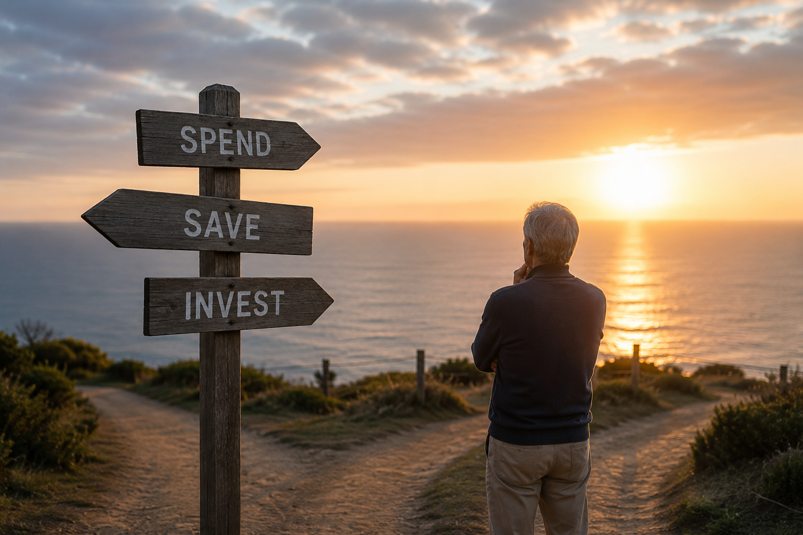

I recently watched a Youtube video about people in Korean who lost their retirement payouts and later faced serious financial hardship.
The video described people who used their retirement money to open cafés or restaurants and failed, people who lost money through aggressive stock-market investing, and parents who used up their retirement savings to support their children’s businesses or help them buy homes.
It also included people who continued spending at the same level after retirement and people who suddenly faced major medical expenses because of serious illness.
In Korea, many employees retire in their early or mid-fifties and receive a lump-sum retirement payment of around 100 million to 300 million Korean won.
That amount may look large enough to start a small business or make an investment. However, when a person receives this money at an age when it may be difficult to build another stable income, it should not be treated simply as investment capital.
It is survival money that may need to support the person for the rest of their life.
Many people lose this money very quickly and then spend their later years in financial difficulty.
What about Australia?

Australia has a different retirement system, housing market, healthcare system and labour market. However, when I look at people around me who face financial difficulties after 50, I notice several recurring patterns.
Based on situations I have personally seen and heard about, I believe there are three major risks that can threaten financial security and retirement after the age of 50 in Australia.
1. A Valuable House Does Not Mean You Have Cash
One of the greatest retirement risks in Australia is retiring without owning a home.
A person who does not own a home must continue paying rent after retirement. Australian rents continue to rise, and it is not easy to afford high rent using only the Age Pension or superannuation after employment income has stopped.
However, owning a home does not always mean that a person is financially secure.
A situation that can be just as risky as renting is buying several expensive investment properties with large mortgages in your late forties or early fifties, when retirement is already getting closer.
Around 2020 and 2021, I saw many people around me take on large debts to buy property because they believed it was their final opportunity to enter the market.
Even in 2023 and 2024, I saw people in their mid-fifties continuing to buy property aggressively.
Some people in their late forties or fifties took out mortgages of more than one million dollars. One person bought a two-million-dollar property using a mortgage of approximately $1.5 million.
Because the value of the property later increased significantly, the situation may appear safe.
For example, a person may believe that a home bought for $2 million is now worth $4 million. They may calculate that after selling the property and repaying a $1.5 million mortgage, they will still have $2.5 million left.
Because of this, they may believe that the enormous amount of interest they are currently paying is not a serious problem.
“My property has increased in value, so I am rich.”
“I will have plenty of money left when I sell it.”
“My retirement money is inside my house.”
However, this calculation ignores several important risks.
An estimated property value is not cash
A property being valued at $4 million does not mean that it can definitely be sold for $4 million at the exact time the owner needs the money.
The property market may be weak. There may not be enough buyers who can afford an expensive property in that area. The house may need major repairs, or the owner may have to accept a lower price if the sale is urgent.
The timing can be especially difficult if the property must be sold because of retirement, unemployment, illness or divorce.
In those situations, the owner may not have enough time to wait for the best buyer or the best price.
A home can be a valuable asset, but it is not an asset that can always be converted immediately into cash at the price the owner wants.
Rising property values do not erase the cost of ownership
A person who bought a property in 2020 and kept a large mortgage for more than six years may have paid a huge amount of interest.
There are also many other expenses, including stamp duty and legal fees when purchasing the property, council rates, insurance, repairs and regular maintenance.
When the property is sold, the owner may also need to pay real estate agent fees and moving expenses.
People often compare only the current value of the property with the remaining mortgage. However, all the costs paid during the years of ownership have also reduced their wealth.
Income disappears at retirement, but the mortgage does not
While a person is working, a high salary may make it possible to manage a large mortgage, living expenses and loan repayments.
After retirement, regular employment income stops.
No matter how valuable a house may be, it does not automatically provide money for groceries, electricity bills or daily living expenses every month.
When a large mortgage remains, the owner may need to withdraw money from superannuation to repay the loan, sell the property and move to a cheaper area, or continue working much longer than expected.
This can create a situation in which a person owns an expensive property but does not have enough cash for everyday living.
This is often described as being asset-rich but cash-poor.
Even if someone owns a four-million-dollar house, they cannot cut off one small part of the house and sell it to obtain the $50,000 they need for living expenses.
They may eventually have to sell the entire property or take out another loan through refinancing.
For this reason, retirement security should not be measured only by the market value of a property.
The more important questions are:
- How much mortgage debt will remain at retirement?
- Can the repayments be managed without employment income?
- Can everyday expenses be paid without selling the property?
- After selling the property, where will the owner live?
- Will there still be enough money after purchasing another home?
It is dangerous to treat the current estimated value of a property as if the money is already sitting in a bank account.
The risk becomes even greater when a person in their fifties already has a large mortgage but continues expanding their investments.
A person in their thirties may have many years of employment ahead to recover from a financial loss. In the late fifties, the same loss can damage the person’s entire retirement.
Owning a highly valued property is not the same as being able to retire securely.
2. Believing That My Health and Earning Power Will Last Forever
Australia has a relatively flexible labour market.
Even at an older age, people who are healthy and have useful skills or experience may be able to find another job or continue working part-time or on a contract basis.
It is therefore common to see people continuing to work in their sixties.
This is certainly one of Australia’s strengths.
However, it can also lead some people to believe that they do not need enough retirement savings because they can simply continue working.
“I am healthy, so I can keep working.”
“I do not need to retire. I can continue earning money.”
“As long as my body is healthy, I can work into my seventies.”
These ideas are based on the assumption that the body and the ability to work will continue functioning normally.
Because I work as a massage therapist, I meet many people who push their bodies too hard for work.
Some people work five days a week and then take additional weekend shifts. Others use their one-hour break to go somewhere else and complete another job.
Even when they experience ongoing pain or unusual physical symptoms, they continue working because they do not want to lose time or money by seeing a doctor.
However, after the age of 50, health can sometimes change very suddenly.
I have known two people who had appeared healthy and were continuing to work, but suddenly collapsed, discovered that they had cancer and died only a few months later.
I also knew a doctor who suddenly collapsed in his own consulting room. He suffered a brain haemorrhage and died within 30 minutes of arriving at the emergency department.
Even someone with extensive medical knowledge may fail to recognise warning signs or may overestimate their own health.
When health fails, the financial impact does not end with medical bills
Australia has Medicare and a public healthcare system.
For this reason, it may not be accurate to say that a person will lose all their wealth simply because of hospital treatment, as may happen in some other countries.
However, when the primary breadwinner develops a serious illness, the greatest financial shock may not be the medical bill itself.
It may be the sudden loss of income.
If the primary breadwinner can no longer work because of stroke, cancer, brain haemorrhage, kidney disease or a serious spinal condition, their salary may stop immediately.
However, the mortgage, rent, car expenses, insurance premiums, electricity bills and grocery costs continue.
At the same time, additional expenses may arise, including:
- Specialist appointments and medical tests
- Prescription medicines
- Physiotherapy and long-term rehabilitation
- Hearing aids, wheelchairs and other equipment
- Modifications to stairs, bathrooms and entrances
- Transport assistance
- Cleaning and meal preparation
- Personal care and support with daily activities
- Home care or residential aged care
- Large out-of-pocket costs when private treatment is chosen
A husband or wife may also reduce their working hours or leave employment to care for the unwell partner.
In that situation, the household may not lose only one income. Both incomes may be reduced at the same time.
A large mortgage and high living expenses that were manageable while everyone was healthy can quickly become overwhelming when serious illness occurs.
Insurance does not cover every risk
Many people believe that private insurance or insurance held through superannuation will provide enough protection.
However, different insurance products cover different situations.
Income protection insurance may replace part of a person’s income for a limited period when they are unable to work.
Trauma insurance may pay a lump sum when a person is diagnosed with certain serious medical conditions.
Total and permanent disability insurance, or TPD insurance, may provide a payment when strict permanent-disability conditions are met.
Each policy has waiting periods, benefit periods, exclusions and payment limits.
Having insurance does not mean that a person’s full salary, medical costs, care costs and household expenses will automatically be covered.
Government support has similar limitations.
The government may provide assistance for illness, disability and caring responsibilities, but these payments do not necessarily replace the person’s former salary or previous standard of living.
Ignoring the body to earn more money is also a financial risk
People often believe that working more will allow them to build a larger retirement fund.
Income and savings are certainly important.
However, earning money by continuously exhausting the body without proper rest can eventually destroy the retirement that the person is trying to prepare for.
If serious illness occurs, the person may have to use their savings for treatment and living expenses.
They may also lose the future income that they expected to earn.
It is dangerous to think of health and physical labour as unlimited resources.
After the age of 50, health is not only a matter of personal happiness. It is a major economic asset that protects both future earning ability and the wealth that has already been accumulated.
The first risk is treating the market value of a home as if it were cash.
The second risk is treating health and the ability to work as if they were permanent sources of income.
We should not destroy our present health in the name of preparing for retirement.
3. Using Retirement Savings to Start a Business Because You Are Afraid to Retire
More Australians than many people realise want to start businesses after the age of 50.
This is particularly common among people who have spent many years in stable government or corporate jobs.
They often say:
“If I retire and have nothing to do, I will grow old more quickly.”
“People become weak soon after they stop working.”
“The cost of living in Australia is too high to retire completely.”
“I need an income that will continue after my salary stops.”
There are understandable reasons for these concerns.
How can I continue paying these expenses after my salary disappears?
The basic cost of living in Australia is very high.
Even people who own their homes outright must continue paying council rates, home insurance, electricity and gas bills, transport costs, groceries, healthcare costs and home-repair expenses.
According to the December 2025 ASFA Retirement Standard, a relatively healthy homeowner with no mortgage may need approximately $54,840 a year as a single person, or $77,375 a year as a couple, to maintain a comfortable retirement lifestyle.
These figures assume that the retirees are not paying rent and do not have a large mortgage.
It is therefore understandable that even people with stable careers feel anxious as retirement approaches.
Investment property does not always solve this problem.
A unit producing $1,000 a week in rent may appear to generate $52,000 a year in income.
However, the owner must still pay strata levies, council rates, water charges, insurance, property-management fees, repair costs and maintenance costs.
There may also be periods when the property is vacant.
Property repairs are extremely expensive in Australia.
An older unit may suddenly require a large special levy. This can remove several years of rental profit at once.
I have seen people around me suddenly receive special-levy bills ranging from several thousand dollars to tens of thousands of dollars and then struggle to find the money.
These payments are non-negotiable. Once approved, they must be paid.
Gross rental income and the amount that an owner can actually use for everyday living are completely different.
Because of these expenses, many people feel that superannuation and investment property alone will not provide the retirement lifestyle they want.
They eventually begin thinking:
“I should not retire completely. I should create my own business and continue earning money.”
The desire to start a business in your fifties is not simply greed
Many people were unable to start businesses in their thirties or forties because they had stable jobs and family responsibilities.
By the time they reach their fifties, their children may be grown up, and they may have built valuable professional experience, skills and networks.
They may still be healthy and capable of working, so they begin to feel that this is their final opportunity.
“If I use the experience I have built throughout my career, I can create a business that will provide income into my seventies.”
“My salary will stop, but my business can continue.”
“I want to create something of my own before it is too late.”
There is nothing wrong with these ideas.
People in their fifties may actually be in a good position to start a small business within an area they understand.
They may have valuable experience, technical knowledge, professional networks and a better understanding of customers.
The problem begins when this reasonable desire turns into a large business that places all retirement savings at risk.
A business continues spending money even when there are no customers
An employee works and receives a salary on an agreed date.
A business works differently.
Even when there are no customers and no sales, the following costs may continue:
- Commercial rent and lease bonds
- Shop fit-outs
- Equipment and vehicles
- Registrations and licences
- Insurance
- Accounting and legal costs
- Electricity, gas and internet
- Software and payment systems
- Stock and supplies
- Marketing
- Employee wages and superannuation
- Loan repayments
Commercial rent, labour, repairs and professional services are expensive in Australia.
When a business does not grow as quickly as expected, fixed costs can consume savings and retirement funds very quickly.
At first, the owner may use personal savings to cover the shortfall.
Next, they may use superannuation or borrow against the equity in their home.
When that money is not enough, they may use a business loan or credit cards.
“Sales will improve if I keep going a little longer.”
“If I stop now, all the money I have already invested will be wasted.”
When people continue putting money into a loss-making business because of these thoughts, the problem may not end with one failed business.
It can destroy their entire retirement.
Mistaking a tax deduction for getting the money back
Business owners often hear that they can claim deductions for vehicles, equipment, travel and certain other expenses.
However, a tax deduction does not mean that the government pays the full cost.
It means that an eligible business expense reduces the amount of income on which tax is calculated.
For example, if a business spends $10,000 on an eligible expense, part of the tax may be reduced. However, the full $10,000 does not return to the business owner.
People without business experience may still think:
“I can buy the car because it is tax-deductible.”
“I can claim the trip as business travel.”
“It is an employee benefit, so spending the money is fine.”
However, buying unnecessary products or services causes more cash to leave the business, even when the tax bill becomes slightly lower.
The goal of a business should not be to spend as much as possible to reduce tax.
The goal should be to spend only what is necessary and retain enough cash to keep the business financially healthy.
Mistaking revenue for profit
New business owners may look at the money entering the business bank account and believe that all of it is profit.
However, some of that money may already be owed elsewhere.
It may need to cover:
- GST
- Income tax or company tax
- Employee PAYG withholding
- Employee superannuation
- Rent
- Insurance
- Supplier invoices
- Equipment replacement
- Loan repayments
If this money is used for personal living expenses, cars or travel, the business may not have enough cash when BAS and tax payments become due.
When the owner begins borrowing money to pay these obligations, the financial condition of the business can deteriorate quickly.
A successful business is not simply one that receives a large amount of revenue.
It is a business that maintains a healthy balance between income, expenses and available cash.
The older we become, the less time we have to recover from failure
People can build successful businesses at any age.
However, the consequences of failure can be very different depending on when it happens.
A person who loses $200,000 in their thirties may be able to return to employment and spend another 20 years rebuilding their finances.
A person who loses the same amount around the age of 60 may not have enough time, energy or employment opportunities to recover.
After retiring from a stable career, it may also be difficult to return to another position paying the same salary.
This does not mean that people should never start businesses after 50.
It means that they should start in a way that will not destroy their lives if the business fails.
A safer approach may include:
- Using existing experience and skills
- Beginning without commercial rent
- Avoiding employees at the beginning
- Testing the market with a small amount of money
- Expanding only after real sales have been confirmed
- Keeping business funds completely separate from personal living expenses
- Setting a maximum acceptable loss in advance
- Setting a clear point at which the business will be closed
- Keeping the family home and essential retirement savings separate from the business
There are many choices between complete retirement and running a large business.
A person may continue working two or three days a week as a contractor or part-time employee.
They may provide consulting, training or freelance services based on their previous career.
They may offer a small service from home or online.
A person does not need a large shop, employees and a major loan simply to continue working after retirement.
A business after retirement can become a new dream. However, if it can only begin by risking all of a person’s survival money, it is not simply a job. It is a gamble using retirement as security.
What These Three Risks Have in Common
These three risks may appear different, but they all begin with similar assumptions.
The first is the belief that property values will continue rising and that the property can always be sold at the desired price.
The second is the belief that the body will remain healthy and capable of earning money indefinitely.
The third is the belief that starting a business will create a stable new income after retirement.
In every case, a future possibility is treated as if it were already guaranteed wealth or guaranteed income.
After the age of 50, it is important to remain hopeful about the future.
However, it is just as important to calculate what will happen if things do not go as expected.
- What will happen if the property does not rise in value?
- What will happen if illness makes continued employment impossible?
- When will the business be closed if it does not produce the expected sales?
- Can one partner maintain the household if the other becomes ill or dies?
- Will enough money remain if the person lives beyond the age of 90?
Assets held after retirement are different from investment capital held when a person is young.
A younger person who loses money may have many years to work and recover. After retirement, it may be much harder to rebuild a stable employment income.
Retirement savings, superannuation and the family home should therefore not be treated only as assets that need to grow.
Before anything else, they are survival resources that must protect the remaining years of a person’s life.
Retirement Is Not Simply the Decision to Stop Working
Retirement does not necessarily mean doing nothing.
People can continue working after retirement. They can learn new skills or start small businesses.
The important point is that they should no longer risk their health, their home and all their survival money at the same time.
After the age of 50, people should consider not only how much profit they may make, but whether they can recover if the plan fails.
A good retirement plan is not built only on the most optimistic future.
Real retirement preparation means being able to maintain a basic standard of living even when property values do not rise, when a person cannot continue working for as long as expected, or when a business does not succeed.
The greatest assets after 50 are not an expensive home or a large business, but secure housing with little debt, manageable living costs, good health, and a stable income that can support you through unexpected setbacks.
Financial difficulty after retirement is not caused only by having too little money.
It can also be caused by treating property like cash, treating the body like a permanent machine for earning money, and risking survival savings in a business because of fear that income will stop.
Before asking how much more money can be earned, people preparing for retirement should first ask how they can protect what they already have.